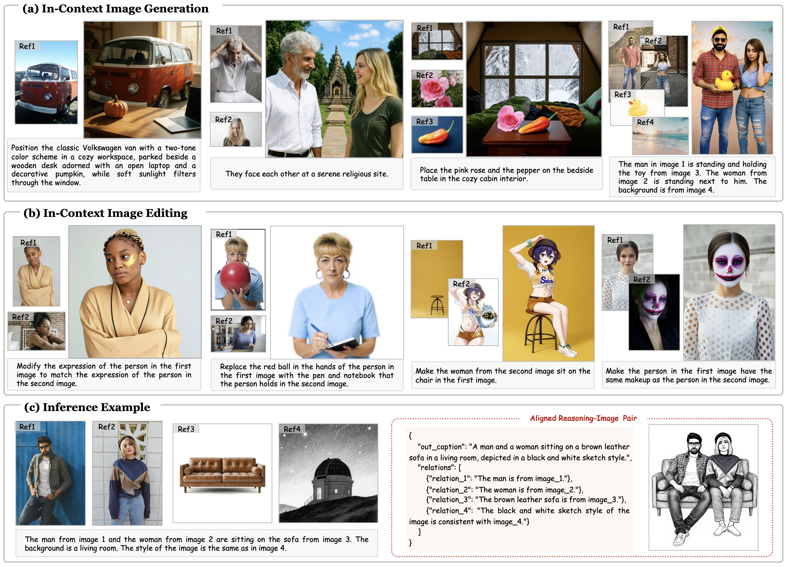
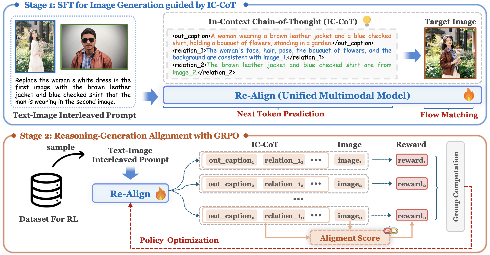
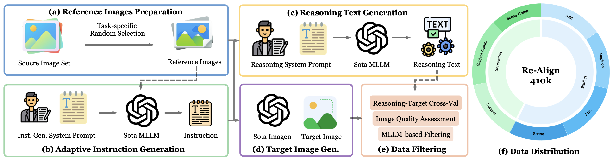
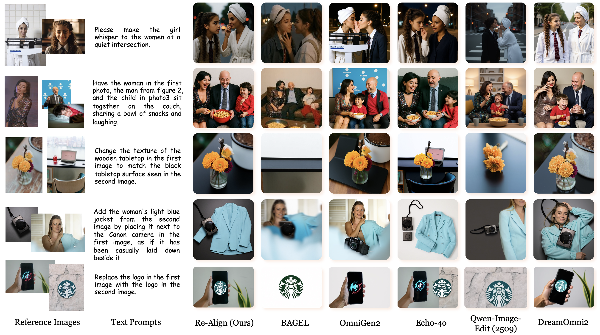
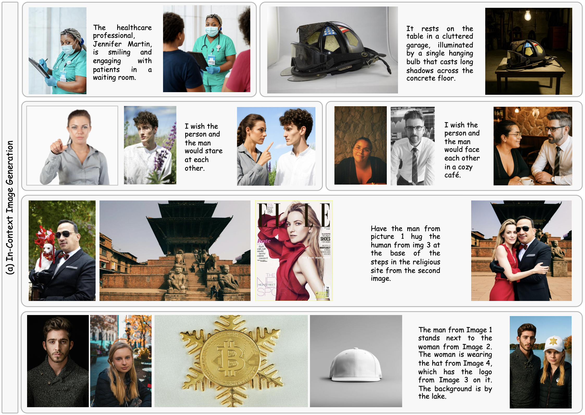
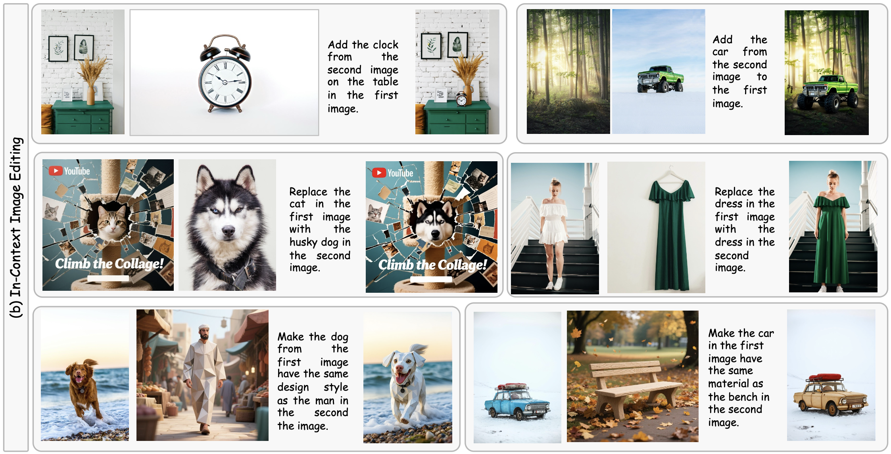

Our proposed Re-Align supports image synthesis conditioned on flexible image-text interleaved prompts, namely a) in-context image generation, also referred to as subject-driven image generation, and b) in-context image editing, also referred to as reference-based image editing. c) An inference example from Re-Align, including an aligned reasoning–image pair. The reasoning text is converted from XML to JSON for clearer visualization.
In-context image generation and editing (ICGE) enables users to specify visual concepts through interleaved image-text prompts, demanding precise understanding and faithful execution of user intent. Although recent unified multimodal models exhibit promising understanding capabilities, these strengths often fail to transfer effectively to image generation. We introduce
Re-Align adopts a structured reasoning mechanism, namely In-Context Chain-of-Thought (IC-CoT), which explicitly decomposes the reasoning process into semantic guidance and reference association and is uniformly applied to both image generation and editing. The former provides a clear textual target for image generation, partly simplifying the image-text interleaved task into a text-to-image generation; the latter analyzes the role of each reference image within the multi-image context to prevent reference confusion.
To further enhance model's performance on complex interleaved prompts, we employ Group Relative Policy Optimization (GRPO) with a surrogate reward that measures the correspondence between the CoT context and the resulting image. The reasoning-induced diversity strategy is proposed to improve the diversity of samples between groups, thereby stabilizing the training of GRPO.
To support model training, we develop an automated data construction and filtering pipeline, yielding Re-Align-410K, a high-quality ICGE dataset with IC-CoT annotations spanning multiple in-context image generation and editing tasks.

The two-stage training pipeline of Re-Align. Upper: First, we perform supervised fine-tuning on carefully curated training data to enable the model to generate images guided by IC-CoT reasoning. Lower: Next, we apply policy optimization to further enhance reasoning–generation consistency, using an alignment score between the structured IC-CoT and the corresponding generated image.
As shown in following, to support model training, we introduce ReAlign-410K, a high-quality collection covering multiple task types. The dataset is constructed via an automated data construction pipeline that integrates advanced MLLMs and state-of-the-art image generation models.

The data construction pipeline of Re-Align-410K and its task distribution. a) reference images preparation, b) adaptive instruction generation, c) reasoning text generation, d) target image generation, e) data filtering, and f) the data distribution of Re-Align-410K.

Qualitative comparisons of proposed Re-Align with BAGEL, OmniGen2, Echo-4o, Qwen-Image-Edit(2509) and DreamOmni2 on the in-context image generation and editing tasks.


Figure(a) provides additional incontext image generation and editing examples, demonstrating that the model produces accurate and highly consistent images when conditioned on one to four reference inputs. Furthermore, Figure(b) showcases in-context image editing capabilities, where the first, second, and third rows illustrate object addition, object replacement, and attribute modification with reference images, respectively. These results underscore the strong versatility and effectiveness of Re-Align across a broad range of creative generation tasks.
@misc{he2026realign,
title={Re-Align: Structured Reasoning-guided Alignment for In-Context Image Generation and Editing},
author={Runze He and Yiji Cheng and Tiankai Hang and Zhimin Li and Yu Xu and Zijin Yin and Shiyi Zhang and Wenxun Dai and Penghui Du and Ao Ma and Chunyu Wang and Qinglin Lu and Jizhong Han and Jiao Dai},
year={2026},
eprint={2601.05124},
archivePrefix={arXiv},
primaryClass={cs.CV},
url={https://arxiv.org/abs/2601.05124},
}